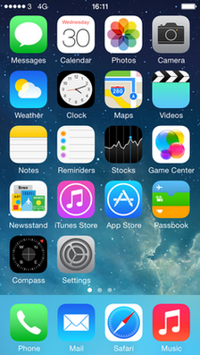

iOS 7
O iOS 7 é o sétimo maior lançamento do sistema operacional móvel iOS desenvolvido pela Apple Inc. , sendo o sucessor do iOS 6 . Ele foi anunciado na Worldwide Developers Conference da empresa em 10 de junho de 2013 e foi lançado em 18 de setembro de 2013. Ele foi sucedido pelo iOS 8 em 17 de setembro de 2014.
O iOS 7 introduziu uma interface de usuário completamente redesenhada, um projeto creditado a uma equipe liderada pelo vice-presidente sênior de design da Apple, Jony Ive . A nova aparência, com ícones mais planos , uma nova função de deslizar para destravar e novas animações, foi descrita por Ive como "beleza profunda e duradoura na simplicidade". O novo design foi implementado em todo o sistema operacional, incluindo o Notification Center, que foi atualizado com três guias que oferecem diferentes visões de informações; notificações visíveis na tela de bloqueio; um assistente de voz Siri redesenhado, oferecendo indicadores visuais; e um Centro de Controle que oferece fácil acesso aos recursos mais usados. O iOS 7 também introduziu o AirDrop , uma tecnologia de compartilhamento sem fio; CarPlay , integração de telefone e carro; e atualizações automáticas de aplicativos na App Store .
A recepção do iOS 7 foi mista. A nova linguagem de design foi criticada, com críticos notando a implementação de mudanças de design em vez de melhorias reais de produtividade e citando exemplos como animações atrasando o acesso, falta de consistência de ícone e botões escondidos como aspectos negativos da experiência do usuário. A adição do Centro de Controle foi elogiada, assim como atualizações para Siri e multitarefa. Logo após o lançamento, houve relatos do novo design causando doença, uma tendência explicada como sendo causada por animações com efeitos similares à doença do carro.
A adoção do iOS 7 pelo usuário foi rápida. Sua participação no mercado de iOS foi estimada em 35% após um dia, e instalada em 200 milhões de dispositivos em 5 dias, o que a Apple alegou ser "a atualização de software mais rápida da história".

Desenvolvedor Apple Inc.
Modelo de origem Fechado , com componentes de código aberto
lançamento inicial 18 de setembro de 2013
Último lançamento 7,1,2 (11D257) / 30 de junho de 2014
Tipo de kernel Híbrido ( XNU )
Licença EULA proprietário , exceto para componentes de código aberto
Antecessor iOS 6
Sucessor iOS 8
iOS 7.1 rodando em um iPhone 5S
Introdução e lançamento inicial
O iOS 7 foi introduzido na Apple Worldwide Developers Conference em 10 de junho de 2013. Uma versão beta foi disponibilizada para desenvolvedores registrados após o anúncio.
O iOS 7 foi lançado oficialmente em 18 de setembro de 2013.
Atualizações
7.0.1
O iOS 7.0.1 foi lançado em 20 de setembro de 2013, especificamente para o iPhone 5C e iPhone 5S . A atualização incluiu correções de bugs que permitem aos usuários comprar o conteúdo do iTunes com o scanner de reconhecimento de impressão digital Touch ID, em vez de usar um código de acesso.
7.0.2
O iOS 7.0.2 foi lançado em 26 de setembro de 2013. A atualização corrigiu bugs que poderiam permitir que alguém ignorasse a senha da tela de bloqueio e reintroduziu uma opção de teclado grego para a entrada de senha.
7.0.3
O iOS 7.0.3 foi lançado em 23 de outubro de 2013, com suporte para o iPad Air e iPad Mini 2 . Ele também incluía suporte para o iCloud Keychain , um gerador de senhas para o navegador Safari , atualizava a tela de bloqueio com um atraso do texto "Slide to Unlock" quando o Touch ID estava em uso e muitas correções de bugs.
7.0.4
O iOS 7.0.4 foi lançado em 14 de novembro de 2013, com correções de bugs corrigindo algumas chamadas do FaceTime.
7.0.5
O iOS 7.0.5 foi lançado em 29 de janeiro de 2014, com uma correção corrigindo o provisionamento de rede para alguns modelos iPhone 5S e iPhone 5C na China.
7.0.6
O iOS 7.0.6 foi lançado em 21 de fevereiro de 2014, com uma correção para um problema de verificação de conexão SSL.
7.1
O iOS 7.1 foi lançado em 10 de março de 2014. A atualização incluiu melhorias na tecnologia de impressão digital Touch ID , suporte para CarPlay e uma correção para um problema de falha na tela inicial. Ele também trouxe atualizações visuais para as teclas shift e caps lock no teclado, ícones refinados para vários dos aplicativos padrão da Apple e um novo design para alguns aspectos das telas de discagem e desligamento do telefone.
7.1.1
O iOS 7.1.1 foi lançado em 22 de abril de 2014, com algumas correções de bugs.
7.1.2
O iOS 7.1.2 foi lançado em 30 de junho de 2014, com correções de bugs e melhor conectividade e estabilidade do iBeacon.
Recursos do sistema
Design
O iOS 7 introduziu uma revisão visual completa da interface do usuário. Com "ícones mais nítidos e planos, fontes mais finas, uma nova função de deslizar para destravar e um novo painel de controle que desliza da parte inferior da tela para as configurações acessadas com frequência", o sistema operacional também reformulou significativamente o padrão pré-instalado aplicativos da Apple. Jony Ive , chefe de design da Apple, comentou que "Há uma beleza profunda e duradoura na simplicidade, na clareza, na eficiência. A verdadeira simplicidade é derivada de muito mais do que apenas a ausência de desordem e ornamentação - é trazer para a complexidade ... O iOS 7 é uma representação clara desses objetivos. Ele tem uma estrutura totalmente nova que é coerente e aplicada em todo o sistema ".
AirDrop
O iOS 7 introduziu o AirDrop , uma tecnologia de compartilhamento sem fio acessível a partir do ícone de compartilhamento, que permite aos usuários enviar arquivos de seu dispositivo local para outros dispositivos iOS próximos. Pode ser ativado no Centro de controle, com opções para controlar sua descoberta por outros dispositivos, incluindo Desativado, Somente contatos e Todos.
No lançamento, o AirDrop só estava disponível no iPhone 5 e posterior, na quarta geração do iPad e depois, no iPad Minis e no iPod Touch de quinta geração.
Centro de Controle
O iOS 7 introduziu o Centro de Controle , um menu que os usuários podem acessar deslizando da parte inferior da tela, fornecendo acesso a configurações usadas com frequência, como Modo Avião , Wi-Fi , Bluetooth , Modo Não Perturbe e Bloqueio de Rotação. Há um controle deslizante para ajustar o brilho da tela, controles para reprodução de música e um controle deslizante de volume. Uma alternância de lanterna também está disponível, assim como um ícone para acessar rapidamente a câmera.
Centro de Notificação
O iOS 7 reformulou o Notification Center , com alterações visuais e funcionais. Tem três guias; "Today" (informações sobre o que vem durante o dia), "All" e "Missed". As notificações agora estão visíveis na tela de bloqueio do telefone, e as notificações são sincronizadas em todos os dispositivos, para que os usuários não precisem dispensar a mesma notificação várias vezes em dispositivos diferentes.
Alternador de aplicativos
O iOS 7 expandiu a tela para alternância de aplicativos. Os usuários tocaram duas vezes no botão inicial e foram retirados do aplicativo atual para ver miniaturas de tela inteira dos aplicativos acessados recentemente.
CarPlay
O CarPlay (antigo iOS no carro), lançado como parte do iOS 7.1, integra-se a modelos de carros selecionados para oferecer interação telefônica, incluindo controles de música e navegação no Google Maps, através da tela do carro. Os usuários também podem falar com a Siri para enviar mensagens sem usar as mãos. Ele suporta todos os iPhones equipados com relâmpagos com o iOS 7.1 ou posterior.
Siri
Siri apresenta um novo design onde o assistente aparece com o aplicativo de fundo sendo borrado. Ao falar, surgem ondas vocais visuais, que se formam em um círculo giratório enquanto o dispositivo se comunica com os servidores da Apple. O Siri agora pode controlar um conjunto limitado de configurações do dispositivo, incluindo o Bluetooth . O assistente pode alternativamente enviar o usuário diretamente para o menu de configurações se a consulta não puder ser controlada por voz ou, caso contrário, exibir um erro se a solicitação não puder ser processada. Para pesquisar na Internet, o Bing tornou-se o mecanismo de pesquisa padrão, e os recursos da Web da Siri foram expandidos para incluir a Wikipedia. A Siri também estava mais conectada ao Twitter , oferecendo uma pesquisa completa de tweets.
O iOS 7 também permitia ao usuário alterar o gênero da Siri, com novas opções para vozes masculinas e femininas.
Outro
A pesquisa do Spotlight é acessada mantendo e arrastando a tela inicial.
O iOS 7 veio com novos papéis de parede que incluíam um efeito "Parallax"; os ícones parecem estar se movendo enquanto o usuário move o telefone, produzindo uma "ilusão de que os ícones estão flutuando acima do papel de parede de fundo".
Em Configurações, os usuários têm a opção de fazer vibrações personalizadas para determinados tipos de notificações, desativar o efeito de animação do papel de parede paralaxe usando uma configuração Reduzir movimento, e bloquear chamadores, com o bloco sendo aplicado em vários dispositivos e aplicativos. incluindo telefone, mensagens e FaceTime.
Na tela inicial, os aplicativos recém-instalados e os aplicativos atualizados recentemente têm um ponto azul ao lado deles até que o usuário abra o aplicativo pela primeira vez.
As pastas são atualizadas para incorporar páginas diferentes, semelhantes ao layout da tela inicial, permitindo uma expansão significativa da funcionalidade de pastas. Cada página de uma pasta pode conter até nove aplicativos, e pode haver 15 páginas no total, permitindo um total de 135 aplicativos em uma única pasta.
Recursos do aplicativo
App Store
A App Store recebeu várias alterações significativas no iOS 7. Os usuários podem ativar atualizações automáticas de aplicativos. Os usuários agora podem visualizar um histórico de atualizações para cada aplicativo instalado. Com os serviços de localização ativados, a App Store tem uma guia Near Me que recomenda aplicativos populares com base na localização geográfica do usuário. Também foi possível baixar versões mais antigas de aplicativos, no caso de novas versões do iOS deixarem dispositivos mais antigos incompatíveis com atualizações do sistema, permitindo que os usuários mantenham uma cópia funcional da última atualização com suporte de cada aplicativo.
Fotos e Câmera
O iOS 7 introduziu um modo de foto quadrada para o aplicativo Câmera, ativando "fotos no estilo Instagram ". Também são novos filtros ao vivo; nove opções de filtros diferentes que alteram a aparência da foto. Melhorias adicionais na câmera incluíram a capacidade de pinçar para fazer zoom durante a gravação de vídeo e um modo Burst para tirar fotos sucessivas com facilidade, segurando o botão do obturador, fazendo com que o telefone demore 10 quadros por segundo. No iPhone 5S , uma opção de vídeo em câmera lenta foi adicionada, com a capacidade de gravar um vídeo em uma alta taxa de quadros de 120 quadros por segundo. Ele pode ser editado no aplicativo Fotos, onde os usuários podem decidir por onde começar e finalizar a parte em câmera lenta.
O aplicativo Fotos foi atualizado com novas opções de categorização. Três guias na parte inferior, "Fotos", "Compartilhado" e "Álbuns", cada um aberto para novas janelas com galerias. Na interface principal do aplicativo Fotos, o aplicativo exibe uma linha do tempo de todas as fotos, classificadas em "Anos", "Coleções" e "Momentos". Filtros foram adicionados, permitindo aos usuários escolher entre vários tipos de filtros para adicionar às suas fotos. Juntamente com as opções existentes para compartilhar fotos, o aplicativo foi atualizado com suporte para a nova funcionalidade AirDrop.
Music
O aplicativo Music integrou o serviço de rádio iTunes da Apple; um serviço de música baseado em estações que permite que os usuários escolham um artista, com o serviço gerando uma "estação" baseada nessa e em músicas de artistas similares. Os usuários puderam pular músicas e pesquisar o histórico das músicas anteriores, além de poderem comprar as músicas diretamente da iTunes Store durante a reprodução. O iTunes Radio também tinha um recurso que mostrava músicas atualmente no Twitter . O iTunes Radio era gratuito e suportado por anúncios, mas os usuários podiam assinar o iTunes Match , que permitia a reprodução sem anúncios.
Depois de mais de dois anos de lançamento, o iTunes Radio foi finalmente descontinuado em janeiro de 2016, com os recursos sendo transferidos para o novo serviço de assinatura de música do Apple Music e para a estação de rádio Beats 1.
Safari
No iOS 7, o navegador da Web Safari recebeu várias atualizações significativas. As duas barras de pesquisa encontradas nas iterações anteriores do navegador foram combinadas em um único campo "Pesquisa Inteligente". O gerenciamento de guias foi aprimorado para permitir mais de oito abas abertas de uma só vez, além de empilhar as abas umas sobre as outras verticalmente, em oposição a uma exibição de cartão horizontal. A opção de inserir uma guia Particular foi incorporada no próprio aplicativo em vez de nos menus Configurações, e um novo botão "Não rastrear" permite que o usuário gerencie ainda mais seus níveis de privacidade.
Mapas
Agora, o Apple Maps apresenta rotas a pé curva-a-curva.
O design do Maps foi atualizado para apresentar uma visualização em tela cheia, onde os elementos da interface, como a barra de pesquisa, desaparecem da exibição, além da nova pesquisa translúcida e barras de ferramentas inferiores e um Modo noturno que é ativado automaticamente quando os usuários dirigem à noite. Um controle de volume Siri separado está disponível no Google Maps, permitindo que os usuários "alterem o volume relativo do feedback de voz do Siri, independentemente do volume do sistema, para que ele não seja muito alto em relação à sua música de fundo".
Tempo
A aplicação Meteorologia no iOS 7 recebeu alterações significativas, incluindo um novo ícone, a ausência de um indicador meteorológico estático na miniatura da aplicação no ecrã inicial e novas representações visuais e dinâmicas do tempo atual.
FaceTime
O iOS 7 tem seu próprio aplicativo FaceTime no iPhone, com o FaceTime Audio, um recurso que permite que os usuários liguem durante o Wi-Fi . O FaceTime Audio é acessível a partir do aplicativo Phone, do aplicativo Contacts ou do próprio aplicativo FaceTime. Está disponível em dispositivos com o iOS 7 ou posterior.
Mensagens
O aplicativo Mensagens permite que os usuários vejam os timestamps de todas as mensagens enviadas ou recebidas.
Recepção
O Verge escreveu que a linguagem de design plana e minimalista do redesenho iOS de 2013 foi informada por aplicativos, incluindo o jogo de palavras de 2013, Letterpress (foto).
A recepção do iOS 7 foi mista. Mark Rogowsky da Forbes criticou vários aspectos do novo design, incluindo o efeito 3D no papel de parede da tela inicial, escrevendo que "a interação entre o iOS 7 e o fundo da tela é um desafio na melhor das hipóteses" e escrevendo que a nova linguagem de design geral para o sistema operacional "agora seus ícones voam para a tela sempre que você a desbloqueia como um tipo de efeito de videogame. É inútil, atrasa seu acesso ao telefone em uma fração de segundo e é indiscutivelmente distrativo". Joshua Topolsky do The Verge também criticou o design, notando a falta de consistência dos ícones em diferentes partes do sistema operacional, bem como escrevendo que "em vez de corrigir problemas com o painel de notificações e alertas, a Apple simplesmente deu a eles um novo revestimento". de tinta e várias camadas de sub-navegação [...] não fazendo nada para acelerar sua produtividade no dispositivo. "
A Nielsen Norman Group , uma empresa de pesquisa, escreveu um extenso relatório sobre a experiência do usuário do iOS 7, resumindo o relatório como "O design plano oculta as chamadas à ação, e deslizar pelas bordas pode interferir nos carrosséis e na rolagem".
David Pogue, do The New York Times , no entanto, gostou do design minimalista do iOS 7, escrevendo que "Quanto mais tempo você gasta com o novo sistema operacional, mais você é grato pela correção e desestabilização na exibição", e que " você pode deslizar para cima a partir da parte inferior da tela para abrir o Centro de Controle: uma paleta compacta e visual de controles para as configurações e funções das quais você mais precisa ". Ele também elogiou as melhorias para o assistente de voz Siri, escrevendo que Siri "é muito melhor". Ele concluiu escrevendo: "A estrutura, o layout e os recursos representam alguns dos melhores trabalhos da Apple. A aparência do iOS 7 - bem, esse julgamento depende de você".
Darrell Etherington, do TechCrunch, focou em muitos dos novos recursos introduzidos, elogiando o Centro de Controle como sendo "incrivelmente útil", AirDrop como sendo "ótimo" (embora notando a falta de interoperabilidade entre iOS e Mac na época), Siri como sendo " mais geralmente útil ", e os novos recursos de multitarefa como" mais inteligentes ", com a tela multitarefa sendo" muito melhor ". Em conclusão, ele escreveu que "Não há dúvida de que o iOS 7 será uma mudança radical do iOS que muitos usuários já conhecem e amam, mas no geral é uma atualização repleta de novos recursos que tornam os dispositivos móveis da Apple mais fáceis e agradáveis. ".
Alguns críticos notaram a influência da concorrência de outras plataformas móveis no design e na funcionalidade do iOS 7. O uso de conceitos do Android e do Windows Phone , como um design minimalista e tipográfico similar, é um Centro de Controle equivalente a configurações semelhantes. alterna na sombra de notificação do Android, um menu multitarefa similar ao WebOS e até mesmo o design do aplicativo Weather sendo quase idêntico aos do Windows 8 e HTC Sense. Sascha Segan da PC Magazine afirmou que "o brilhantismo da Apple é juntar as peças e comercializá-las. As APIs de desenvolvedores da Apple e sua história de ganhar dinheiro para os desenvolvedores ainda reinam suprema - há menos pirataria do que no Android, e um público maior e mais flexibilidade de design do que no Windows Phone. "
A taxa de adoção do iOS 7 foi estimada em 35% após um dia. Dentro de cinco dias, o iOS 7 foi instalado em mais de 200 milhões de dispositivos, que a Apple alegou ser "a atualização de software mais rápida da história". Em agosto de 2014, foi relatado que 91% dos dispositivos iOS executavam o iOS 7 no momento.
Problemas
Design causando doença
Em setembro de 2013, Pranav Dixit da Fast Company relatou queixas dos usuários compartilhadas nos fóruns de suporte da Apple de que o novo design do iOS 7, incluindo "muitas animações de zoom enquanto multitarefa e abertura e fechamento de aplicativos, além de um leve efeito paralaxe" sentir-se doente. Dixit notou que, embora o efeito de paralaxe pudesse ser desativado, a maioria das animações não tinha essa opção.
O Dr. George Kikano, "chefe de divisão de medicina da família no UH Case Medical Center em Ohio", disse à Fox News que "há alguma validade nisso, para pessoas que são suscetíveis". A Fox News escreveu que o Dr. Kikano disse "É uma nova função" paralaxe "que faz com que o fundo do telefone se mova sutilmente, um efeito que leva a um efeito não diferente da doença do carro. O ouvido interno é responsável pelo equilíbrio, os olhos para a visão. Quando as coisas estão fora de sincronia, você se sente tonto, enjoado. Algumas pessoas entendem, outras não, e algumas pessoas se acostumam. "
Dreno da bateria
Adrian Kingsley-Hughes, da ZDNet, escreveu em março de 2014 que os usuários de iPhone e iPad informaram que o consumo de bateria com a atualização do iOS 7.1 foi relatado. Em testes de laboratório, Andrew Cunningham, da Ars Technica, descobriu que alguns modelos de hardware sofreram um menor esgotamento de bateria, enquanto outros não tiveram mudanças estatisticamente significativas.
Desbloqueio da tela de bloqueio
Dom Esposito, da 9to5Mac, relatou em junho de 2014 que um novo método de bloqueio de tela de bloqueio foi descoberto no iOS 7, permitindo acesso ao telefone em "5 segundos sob certas circunstâncias". O problema foi corrigido posteriormente.
Hoaxes
Durante o lançamento do iOS 7, propagandas falsas alegaram que a atualização faria com que os dispositivos se tornassem à prova d'água , e que o AirDrop fosse um mecanismo para proteger a tela do dispositivo de quebrar quando soltado.